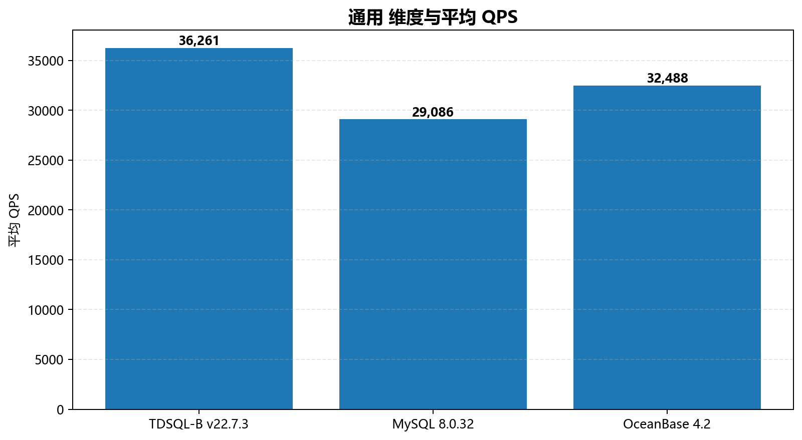
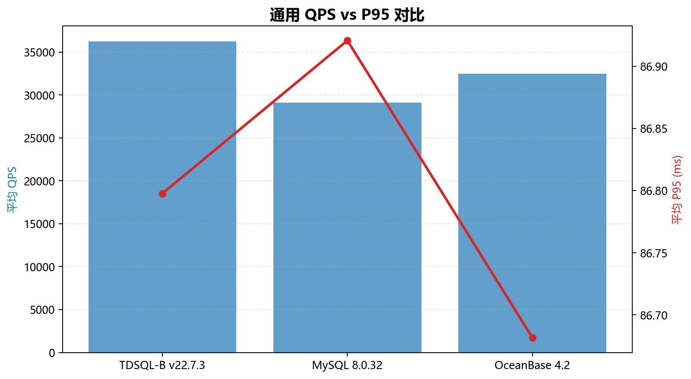

第 2 章 深度分析
2.1 None 分桶分析
按 None 分桶后，各桶平均性能如下：
| 分桶 | 平均 QPS | 平均 P95 (ms) | 样本数 |
|---|
| TDSQL-B v22.7.3 | 36,261 | 86.80 | 30 |
| MySQL 8.0.32 | 29,086 | 86.92 | 30 |
| OceanBase 4.2 | 32,488 | 86.68 | 30 |

None 维度与平均 QPS

None QPS vs P95 对比
[L1]TDSQL-B v22.7.3 峰值 QPS 最高出现在 oltp_point_select（89,929 @ 512 并发）
[L1]TDSQL-B v22.7.3 峰值 QPS 最低出现在 oltp_update_index（14,747 @ 512 并发）
[L1]oltp_point_select 并发扩展率 +334.0%（32→1000 threads）
[L1]oltp_read_only 并发扩展率 +323.6%（32→1000 threads）
[L1]oltp_read_write 并发扩展率 +324.0%（32→1000 threads）
[L1]oltp_write_only 并发扩展率 +325.0%（32→1000 threads）
[L1]oltp_update_index 并发扩展率 +326.6%（32→1000 threads）
[L1]MySQL 8.0.32 峰值 QPS 最高出现在 oltp_point_select（71,646 @ 512 并发）
[L1]MySQL 8.0.32 峰值 QPS 最低出现在 oltp_update_index（12,010 @ 512 并发）
[L1]oltp_point_select 并发扩展率 +318.9%（32→1000 threads）
[L1]oltp_read_only 并发扩展率 +330.2%（32→1000 threads）
[L1]oltp_read_write 并发扩展率 +329.9%（32→1000 threads）
[L1]oltp_write_only 并发扩展率 +326.1%（32→1000 threads）
[L1]oltp_update_index 并发扩展率 +328.2%（32→1000 threads）
[L1]OceanBase 4.2 峰值 QPS 最高出现在 oltp_point_select（79,642 @ 512 并发）
[L1]OceanBase 4.2 峰值 QPS 最低出现在 oltp_update_index（13,058 @ 512 并发）
[L1]oltp_point_select 并发扩展率 +331.6%（32→1000 threads）
[L1]oltp_read_only 并发扩展率 +325.3%（32→1000 threads）
[L1]oltp_read_write 并发扩展率 +330.6%（32→1000 threads）
[L1]oltp_write_only 并发扩展率 +328.3%（32→1000 threads）
[L1]oltp_update_index 并发扩展率 +326.4%（32→1000 threads）
[L2]已按产品分桶输出平均 QPS / P95，详见分析章节。